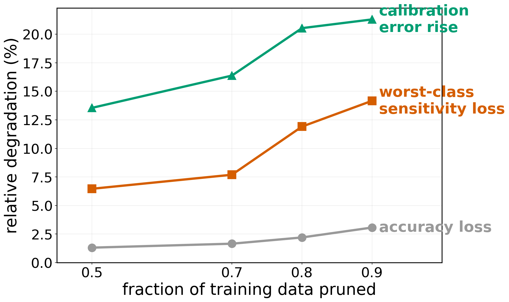
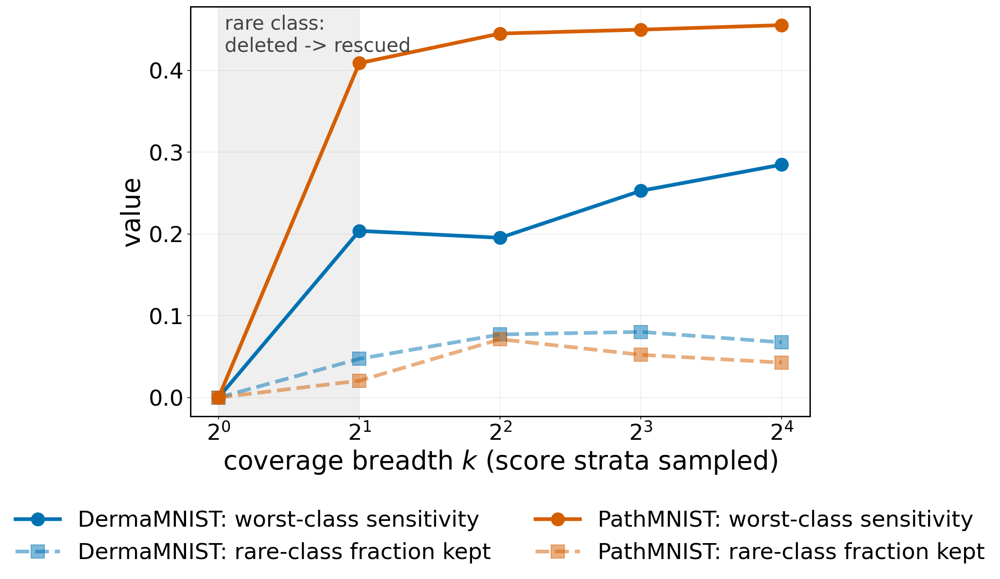
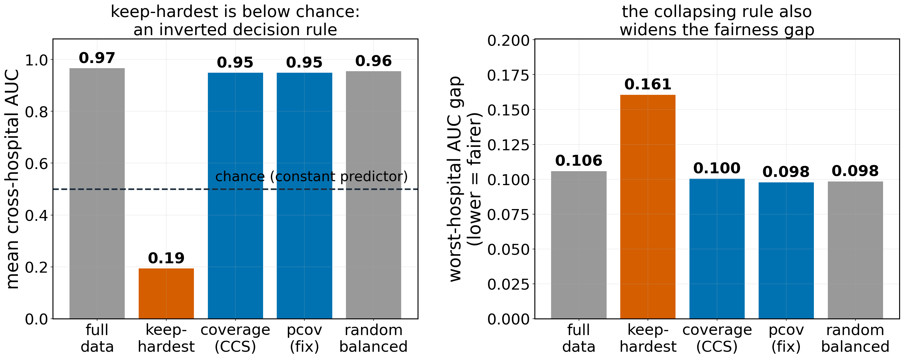
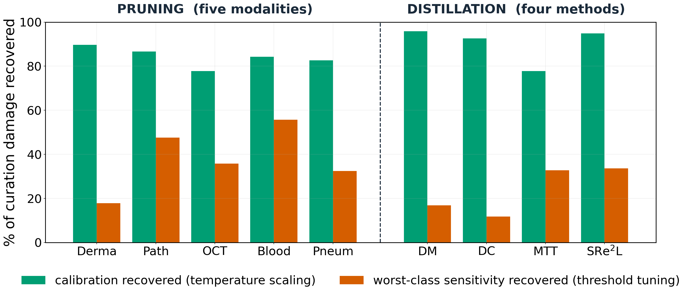
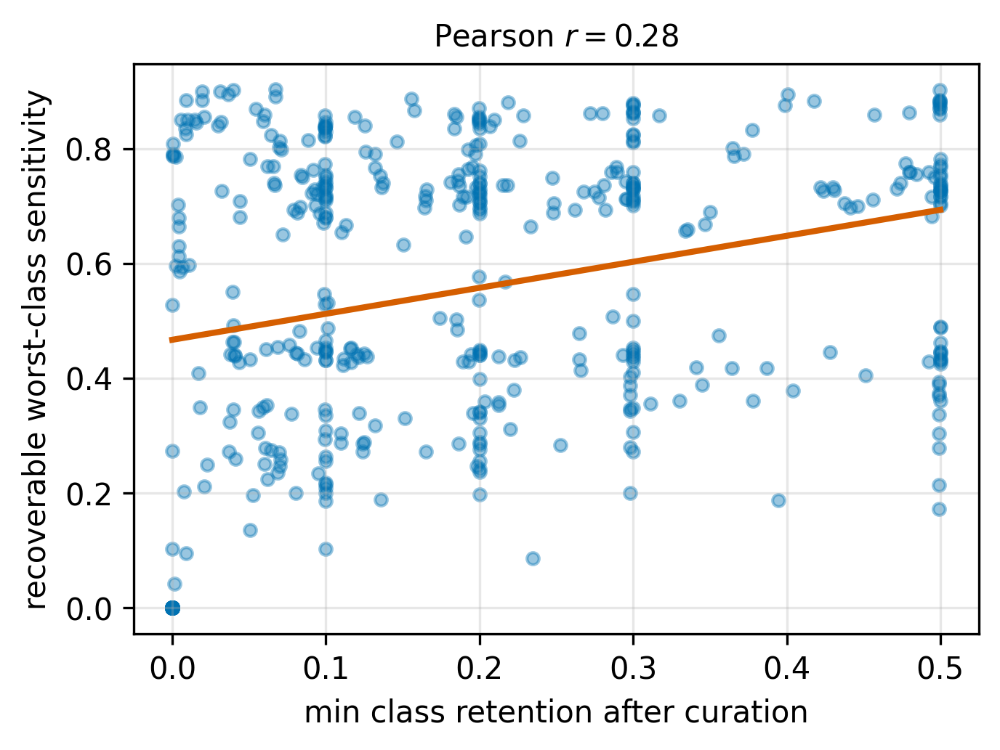

Abstract
Data curation (pruning and distilling training sets) is now standard, judged largely by retained accuracy. In medical imaging that is the wrong target: a curated set keeps accuracy while silently losing what clinicians need: calibration, rare-class sensitivity, and stability across sites. We introduce MedCurate-Bench, a benchmark for whether curated medical datasets retain diagnostic validity, not just accuracy. Across five modalities, two paradigms, a natural-image control, and two 96×96 arms with cross-hospital shift (~3,700 runs), we find: (i) accuracy is a lagging indicator (worst-class sensitivity degrades 2–4× faster, up to 10–20×); (ii) class collapse is a property of the score×rule pairing, not any single score or rule, and only coverage-aware selection is never catastrophic; (iii) curation damage is asymmetric: temperature scaling recovers most calibration error (78–90% pruning, to 96% distillation) but far less worst-class sensitivity (median 33%); and (iv) a per-class coverage rule never deletes a class and keeps the cross-hospital gap tightest (tied with balanced random). It reframes curation reporting from an accuracy number to a diagnostic-validity profile.
Accuracy is a lagging indicator
2–4× faster loss of worst-class sensitivity than accuracy, up to 10–20× for the best-behaved methods.
Collapse is a score × rule pathology
Which extreme fails depends on what the score means. Only coverage-aware selection is never catastrophic.
Damage is asymmetrically recoverable
78–96% of calibration error is restored by temperature scaling; only a median 33% of sensitivity by threshold tuning.
A rule that cannot delete a class
Per-class coverage (pcov) guarantees class survival, wins at real resolution, and keeps the cross-hospital gap tightest.
2Accuracy is a lagging indicator
Validity breaks first. Accuracy barely moves.

3.8× · 2.4×median ratio of fractional worst-class-sensitivity loss to fractional accuracy loss on DermaMNIST and PathMNIST, reaching 10–20× for the best-behaved methods (Wilcoxon p < 10⁻¹⁰ on DermaMNIST).
Concretely, coverage-aware pruning at 30% retention on DermaMNIST costs only 1.2% accuracy but 27% of worst-class sensitivity. A practitioner monitoring accuracy sees a successful compression while the model has quietly lost much of its ability to catch its hardest class.
3Class collapse is a score × rule pathology
Both extremes fail while coverage survives, and which extreme is pathological depends on what the score means.
| Dataset | top-k | bottom-k | per-class | coverage | full-data |
|---|---|---|---|---|---|
| DermaMNIST | 0.13 | 0.67 | 0.22 | 0.74 | 0.78 |
| PathMNIST | 0.40 | 0.52 | 0.50 | 0.88 | 0.87 |
| OCTMNIST | 0.34 | 0.51 | 0.21 | 0.71 | 0.74 |
| BloodMNIST | 0.67 | 0.58 | 0.76 | 0.94 | 0.96 |
| PneumoniaMNIST | 0.90 | 0.62 | 0.84 | 0.87 | 0.89 |
| CIFAR-10 | 0.29 | 0.52 | 0.31 | 0.69 | 0.80 |
| Camelyon17 (96×96) | 0.31 | 0.74 | 0.29 | 0.80 | 0.80 |
| DermaMNIST-HR (96×96) | 0.14 | 0.67 | 0.23 | 0.74 | 0.80 |
On DermaMNIST bottom-k's 0.67 is exactly the majority-class prevalence: the model predicts the majority everywhere, keeping headline accuracy while deleting the rare class (worst-class sensitivity → 0). Per-class top-k preserves class proportions exactly and still collapses, so class balance is neither necessary nor sufficient. Binary tasks show a "half-U" because keep-easiest cannot delete a class when there are only two.
The pathology belongs to the score × rule pairing. For the variance score EVA, keep-hardest is fine (0.69 / 0.82 / 0.68 / 0.78 on Derma / Path / OCT / Blood versus EL2N top-k's 0.13 / 0.40 / 0.34 / 0.67) and the weak rule is instead keep-easiest (0.27–0.62), which discards the informative high-variance samples. Coverage rescues EVA's worst-class sensitivity where keep-hardest leaves it near zero (BloodMNIST 0.08 → 0.86). Moderate-DS behaves the same way. No fixed rule survives every score; only coverage-aware selection does.
Rule of thumb. Retain samples spanning the difficulty spectrum: even minimal breadth rescues the rare class from total deletion. Collapse reverses as a sharp threshold at k = 2 strata, not a gradual slope.


AUC 0.19mean cross-hospital AUC under keep-hardest, versus 0.97 for the full-data model. A collapsed constant predictor would sit at 0.5.
The inversion is present on the in-distribution training hospitals (AUC 0.17) just as on the out-of-distribution ones (0.23), so it is not a shift effect. The hardest 10% of patches are dominated by ambiguous tumour-boundary tissue whose local appearance is inconsistent with the slide-level label; a model trained only on them ranks cases the wrong way on every hospital. Keep-hardest is actively harmful, not merely lossy, on real high-resolution medical data.
The coverage rescue reproduces on ResNet-18, on CIFAR-10, and on both 96×96 arms: DermaMNIST-HR gives top-k 0.14 / coverage 0.74 versus 0.13 / 0.74 at 28×28. The mechanism is quantitatively the same at real resolution.
4The recoverability decomposition
Calibration damage is consistently fixable. Sensitivity damage mostly is not, for both pruning and all four distillation methods.

| Setting | Calibration recovered | Sensitivity recovered |
|---|---|---|
| DermaMNIST (prune) | 90% | 18% |
| PathMNIST (prune) | 87% | 48% |
| OCTMNIST (prune) | 78% | 36% |
| BloodMNIST (prune) | 84% | 56% |
| PneumoniaMNIST (prune) | 83% | 32% |
| Distillation (DM) | 96% | 17% |
| Distillation (DC) | 93% | 12% |
| Distillation (MTT) | 78% | 33% |
| Distillation (SRe²L) | 95% | 34% |
Per-dataset means over non-degenerate conditions. Pooled over 319 individual conditions the median sensitivity recovery is 33%, IQR [0%, 69%], and 27% of conditions recover nothing. Holds under adaptive-ECE, Brier, NLL, and at a fixed 95%-specificity operating point.

Why the asymmetry. Rare-class features usually stay separable even when sensitivity is unrecoverable, so feature collapse is not the driver. Post-hoc remedies can re-weight a class the model already learned; they cannot resurrect a class that curation deleted from training.
6A constructive fix: per-class coverage
pcov applies coverage-aware sampling within each class. By construction it can never delete a class, and it preserves within-class difficulty coverage.
| Dataset | pcov | CCS | Δ (95% CI) |
|---|---|---|---|
| DermaMNIST | 0.309 | 0.236 | +0.073 [−0.04, +0.20] |
| PathMNIST | 0.448 | 0.439 | +0.008 [−0.01, +0.03] |
| OCTMNIST | 0.714 | 0.689 | +0.025 [+0.006, +0.041] * |
| BloodMNIST | 0.839 | 0.846 | −0.008 [−0.03, +0.02] |
| Camelyon17 (96×96) | 0.644 | 0.593 | +0.051 (real-res) |
Worst-class sensitivity after threshold tuning at 90% pruning. On small MedMNIST data pcov ties the strongest baseline (only OCT is significant); at real resolution it wins on both sensitivity and accuracy (Camelyon17 0.82 vs 0.80).
| Camelyon17, r = 0.1 | mean AUC | worst-hospital gap ↓ |
|---|---|---|
| full-data | 0.967 | 0.106 |
| top-k (EL2N) | 0.194 | 0.161 |
| coverage (CCS) | 0.949 | 0.100 |
| pcov (fix) | 0.949 | 0.098 |
| random-balanced | 0.955 | 0.098 |
The selection rule that causes class collapse also causes unfairness across hospitals; the safe rule preserves both. pcov keeps the gap at or below the full-data level, tied with balanced random.
Never keep-hardest, never keep-easiest. Coverage-aware selection is the only rule that is safe across score semantics.
Prefer the per-class variant when class survival must be guaranteed. It never deletes a class and matches or beats the best empirical rule.
Temperature scaling restores calibration after curating. It does not restore lost rare-class sensitivity. Report both, raw and post-remedy.
BibTeX
@inproceedings{
pandey2026medcuratebench,
title={MedCurate-Bench: Auditing the Diagnostic Validity of Curated Medical Image Datasets},
author={Sarthak Pandey and Shreshth Rai and Seifedine Kadry},
booktitle={Second Workshop on Curated Data for Efficient Learning},
year={2026},
url={https://openreview.net/forum?id=wrQwEo2loQ}
}